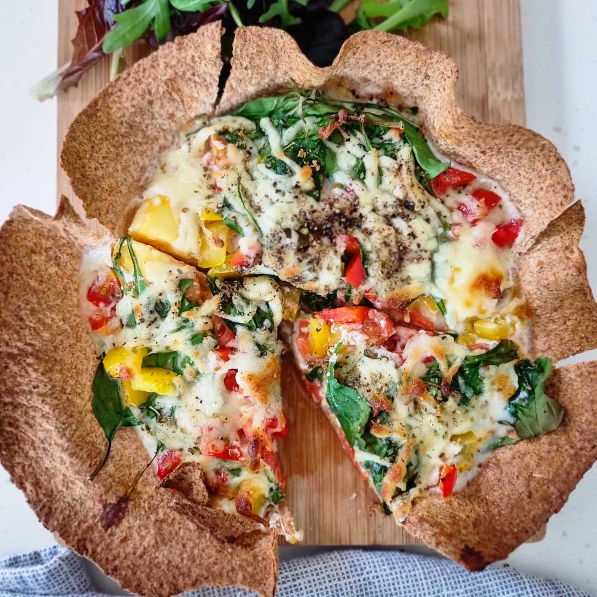

My Favorite Recipe
Breakfast Tortilla Pizza

Ingredients
- 1/2 tablespoon butter, softened
- 1 (10-inch) tortilla
- 3 large eggs
- 1/4 teaspoon salt
- 1/4 teaspoon freshly ground black pepper
- 1/2 cup total assorted toppings, such as cheese, hot sauce, cooked meat or veggies
Instructions
- Preheat the oven to 350 degrees F (175 degrees C).
- Rub butter along the bottom and sides of a 8 or 9 inch cake pan.
- Press tortilla down into the buttered pan and against the sides.
- Crack each egg next to each other on the tortilla.
- Sprinkle with salt and pepper and add desired toppings evenly on top.
- Bake in the preheated oven until egg whites are set and tortilla has become lightly
browned and toasted along the edges and bottom, 13 to 15 minutes.